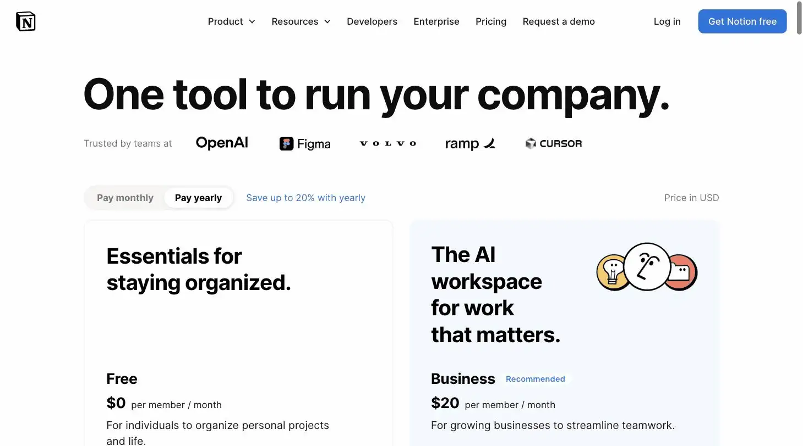
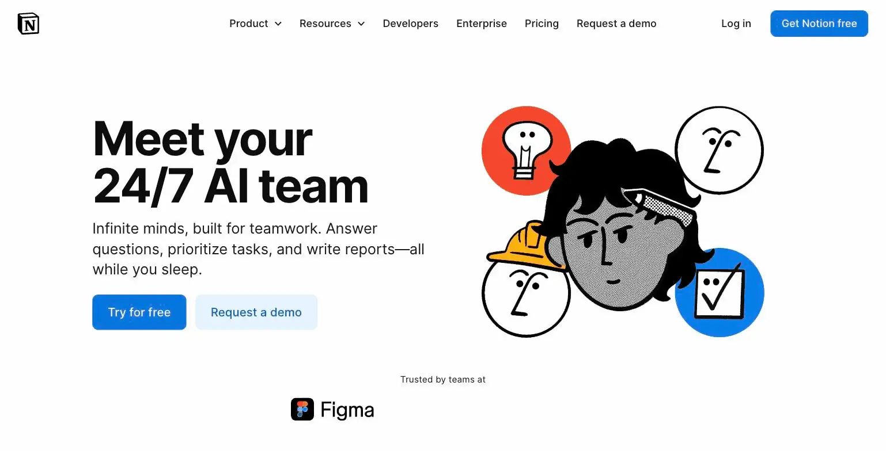

Notion AI
The tablets used to come with the vault. Now they were a separate, considerably pricier wing of the library.
Notion AI is Notion's AI layer, now requiring the $20/user/month Business plan for its most useful features (Notion Agent, Ask Notion). Ranked #15 on Solos Gems (5.5/10), it's only worth the jump if you're already a heavy Notion user, not worth adopting Notion from scratch just for the AI.
Notion AI used to be a reasonable add-on. Now it requires the $20/user/month Business plan, which is Notion's way of admitting it was never really about the AI.
- Value for price4.5/10
- Capability7.5/10
- Ease of use6/10
- Trial safety4.5/10

Notion built its reputation as a flexible notes-and-database tool, and its AI layer is now deeply tied to that structure rather than being a bolt-on chatbot. The catch for solopreneurs: the useful part of Notion AI isn't available on the cheap plans anymore.

Notion's Q&A Agent (shown above) answers questions and can act using content already in your workspace, docs, tasks, wikis, instead of requiring you to copy-paste context into a separate chat window.
Example from notion.com/product/ai. Not independently tested by Solos Gems.What changed in 2026
Notion retired the standalone $10 AI add-on in May 2025. Full AI, including Notion Agent and Ask Notion, now requires the Business plan at $20/user/month ($24 billed monthly, cheaper annually). The Plus plan ($10/user/month) keeps basic AI writing features but loses the automation layer. On top of that, Custom Agents (launched February 2026) moved off a free exploration period in May 2026 and now bill separately at $10 per 1,000 Notion credits, purchased by workspace admins.
What the AI actually does
Notion Agent is the headline feature: it can execute multi-step tasks inside your workspace, for example, turning a meeting transcript into a project tracker, or building a database from an uploaded document, without you manually setting up the structure first. AI Meeting Notes auto-captures and organizes notes from calendar-linked meetings. Enterprise Search, still in beta, surfaces content across your workspace and connected apps in one query.
Pricing breakdown
- Free: $0, no AI agent features
- Plus: $10/user/month, basic AI writing only
- Business: $20/user/month, full AI Agent + Ask Notion
- Enterprise: custom pricing
- Custom Agents: $10 per 1,000 credits, Business/Enterprise only, billed separately
Pros
- Genuinely useful if your notes, docs, and light project tracking already live in Notion
- Agent can skip the manual setup step for new trackers/databases
- Meeting notes tie directly into your existing workspace, not a separate app
Cons
- Jumping from Plus to Business just for AI roughly doubles your per-seat cost
- Custom Agents add a metered credit cost on top of the subscription
- Overkill if you just need note-taking, not workspace automation
Who should skip this
If you're not already a Notion user, the AI features alone aren't a strong enough reason to migrate your notes and docs from wherever they live now. The value here is compounding on an existing habit, not a standalone product.
Common questions
Do I need to upgrade to Business just for the AI?
Yes, Notion AI requires the Business tier, and jumping from Plus to Business roughly doubles your per-seat cost. Only worth it if you're already a heavy Notion user for docs and projects, not a reason to adopt Notion from scratch.
Are Notion's Custom Agents included in the subscription?
No, Custom Agents add a metered credit cost on top of the Business subscription, budget for that separately if you plan to build automated agents rather than just using AI writing assistance.
Is Notion AI overkill for simple note-taking?
Yes. If you just need note-taking, not workspace automation and database-driven projects, the Business-tier cost for AI isn't justified, a simpler, cheaper note app will cover the same need.